Splunk ITSI integration¶
If you are an ITSI customer, you can integrate trackMe concepts in ITSI and use the product capabilities to extend your monitoring.
Key information:
TrackMe generates metrics in the metric index which can directly be turned into KPIs in a KPI base search
Dimensions are indexed within the metrics which describe the entity and provide the by statement keys required to compute the KPIs
Additionally, if TrackMe is running on the same search header layer than ITSI, search time lookups can be used to enrich the entities
Every time a tracker runs, TrackMe records the statuses as summary events in the TrackMe summary index, which are used by ITSI to track and detect changes in the entity statuses
Step 1: entity search and creation¶
Create entity search(es) to generate entities in ITSI:
If ITSI and TrackMe are running on the same search head layer, you can enrich the entities results with information from TrackMe such as the priority or the monitored stated
You can include any kind of filter required, for example you might want to monitoring within ITSI only data sources, that are monitored and a medium or high priority
Create a single entity search per TrackMe category to avoid issues such as duplicated ITSI entities
You do not need a long time range period, the last 15 minutes is enough since all TrackMe entities are available in the summary data for each execution of the trackers
ITSI entities generation search definition¶
Data source entity gen search¶
index=trackme_summary source=current_state_tracking:data_source (data_monitored_state="enabled")
| eval trackme_monitored_state=coalesce(data_monitored_state, metric_monitored_state), object=lower(object)
| stats latest(priority) as trackme_priority, latest(trackme_monitored_state) as trackme_monitored_state by object_category, object
| fields object_category, object, trackme_monitored_state, trackme_priority
| rename object as trackme_object, object_category as trackme_object_category
| eval itsi_role = "trackme", itsi_entity = trackme_object, itsi_entity_type = "trackme:" . trackme_object_category
| fields itsi_entity, itsi_role, itsi_entity_type, trackme_*
Data host entity gen search¶
index=trackme_summary source=current_state_tracking:data_host (data_monitored_state="enabled")
| eval trackme_monitored_state=coalesce(data_monitored_state, metric_monitored_state), object=lower(object)
| stats latest(priority) as trackme_priority, latest(trackme_monitored_state) as trackme_monitored_state by object_category, object
| fields object_category, object, trackme_monitored_state, trackme_priority
| rename object as trackme_object, object_category as trackme_object_category
| eval itsi_role = "trackme", itsi_entity = trackme_object, itsi_entity_type = "trackme:" . trackme_object_category
| fields itsi_entity, itsi_role, itsi_entity_type, trackme_*
Metric host entity gen search if on the same search head(s)¶
index=trackme_summary source=current_state_tracking:metric_host (metric_monitored_state="enabled")
| eval trackme_monitored_state=coalesce(data_monitored_state, metric_monitored_state), object=lower(object)
| stats latest(priority) as trackme_priority, latest(trackme_monitored_state) as trackme_monitored_state by object_category, object
| fields object_category, object, trackme_monitored_state, trackme_priority
| rename object as trackme_object, object_category as trackme_object_category
| eval itsi_role = "trackme", itsi_entity = trackme_object, itsi_entity_type = "trackme:" . trackme_object_category
| fields itsi_entity, itsi_role, itsi_entity_type, trackme_*
ITSI entities import¶
Go in ITSI / Configuration / Entities then click on the button Create Entity / Inport from Search
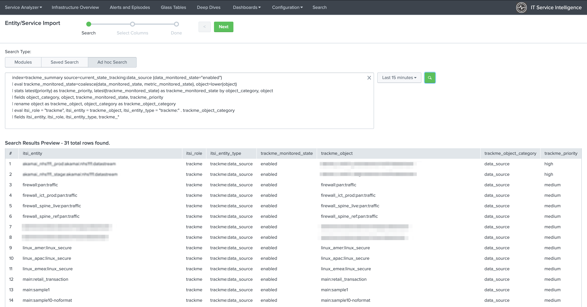{kind=link}
Click next and define the entities fields import:
itsi_entity: import as Entity Title
itsi_role: import as Entity information field
itsi_entity_type: import as Entity Type
trackme_monitored_state: import as Entity information field
trackme_object: import as Entity Alias
trackme_object_category: import as Entity information field
trackme_priority: import as Entity information field
{kind=link}
Click next to generate the entities, and setup a recurrent import job:
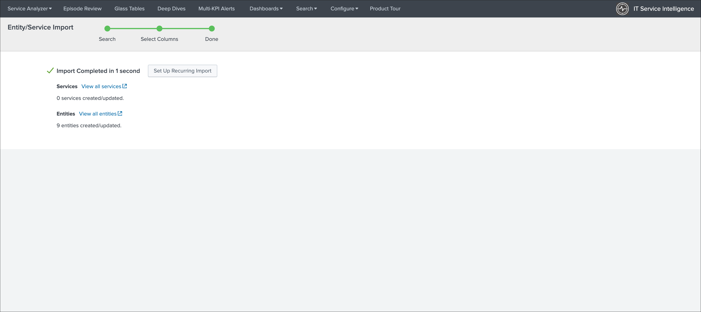 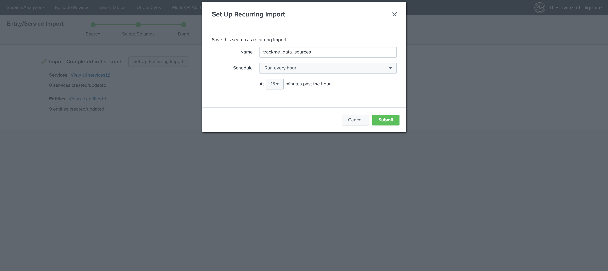{kind=link}
{kind=link}
Any new data source discovered and configured in TrackMe will be created in ITSI, and existing entities will be maintained automatically.
Set up a recurring import, for reference:
https://docs.splunk.com/Documentation/ITSI/latest/Entity/ImportRecurring
Once you have setup the recurring import, you can access to the savedsearches:
ITSI Import Objects - TrackMe:
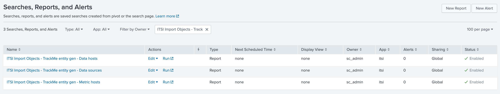{kind=link}
Step 2: create the KPI base search for metrics¶
The next step is to create a KPI base saarch that will turn the metrics into ITSI KPIs, within the KPI base search editor, create a new base search:
KPI base search title and description:
Title: TrackMe:Metrics
Description: This KPI base search handles TrackMe metrics for data sources monitoring
KPI base search:
Type: adhoc
search:
index=trackme_summary source="current_state_tracking:data_source"
| stats latest(data_eventcount) as trackme.eventcount_4h, latest(data_last_lag_seen) as trackme.lag_event_sec, latest(data_last_ingestion_lag_seen) as trackme.lag_ingestion_sec by _time, object_category, object
| rename object_category as trackme_object_category, object as trackme_object
KPI Search Schedule: Every 5 minutes
Calculation Window: Last 5 minutes
Monitoring Lag (in seconds): 30
Split by Entity: yes
Entity Split Field: trackme_object
Filter to Entities in Service: yes
Entity Filter Field: trackme_object
{kind=link}
Then, create the metrics as follows:
Metric: trackme.eventcount_4h
Title: eventcount_4h
threshold field: trackme.eventcount_4h
Unit: #
Entity calculation: Average
Service / Aggregate calculation: Sum
Fill Data Gaps with: Null values
Threshold level for Null values: Unknown
{kind=link}
Metric: trackme.lag_event_sec
Title: lag_event_sec
threshold field: trackme.lag_event_sec
Unit: sec
Entity calculation: Average
Service / Aggregate calculation: Average
Fill Data Gaps with: Null values
Threshold level for Null values: Unknown
{kind=link}
Metric: trackme.lag_ingestion_sec
Title: lag_ingestion_sec
threshold field: trackme.lag_ingestion_sec
Unit: sec
Entity calculation: Average
Service / Aggregate calculation: Average
Fill Data Gaps with: Null values
Threshold level for Null values: Unknown
{kind=link}
Step 3: create the KPI base searches for summary statuses events¶
KPI base search title and description:
Title: TrackMe:FlappingStatuses
Description: This KPI base searches handles TrackMe status flapping events
KPI base search:
Type: adhoc
search:
`trackme_idx` source="current_state_tracking:*" priority=*
| eval {priority}_{current_state} = current_state
| rename object_category as trackme_object_category, object as trackme_object
KPI Search Schedule: Every 5 minutes
Calculation Window: Last 5 minutes
Monitoring Lag (in seconds): 60
Split by Entity: yes
Entity Split Field: trackme_object
Filter to Entities in Service: yes
Entity Filter Field: trackme_object
{kind=link}
Then, create the metrics as follows:
Metric: high_red
Title: high_red
threshold field: high_red
Unit: #
Entity calculation: Count
Service / Aggregate calculation: Sum
Fill Data Gaps with: Null values
Threshold level for Null values: Normal
{kind=link}
Metric: medium_red
Title: medium_red
threshold field: medium_red
Unit: #
Entity calculation: Count
Service / Aggregate calculation: Sum
Fill Data Gaps with: Null values
Threshold level for Null values: Normal
{kind=link}
Metric: low_red
Title: low_red
threshold field: low_red
Unit: #
Entity calculation: Count
Service / Aggregate calculation: Sum
Fill Data Gaps with: Null values
Threshold level for Null values: Normal
{kind=link}
Notes:
the technique
{priority}_{current_state} = current_stateallows you to track different levels of priorities easily without any conditional operations
Step 4: create a service that will be used for the service template definition¶
Go in Services / Create Service:
Title: TrackMe:Template
Description: This is the template initial service for TrackMe
Manually add service content
{kind=link}
Define the entities rules as follows:
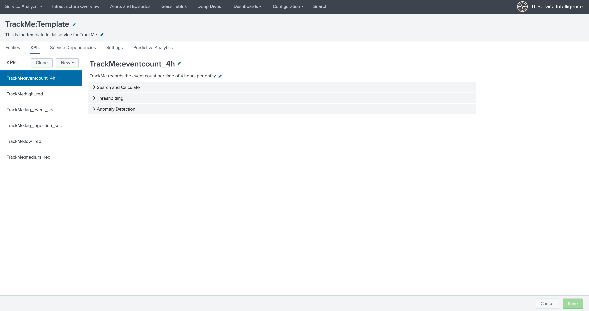{kind=link}
Info: itsi_role matches “trackme”
Info: trackme_object_category matches “*”
Entity Tile: does not match “*”
{kind=link}
Add the KPIs to the service, as follows:
TrackMe:eventcount_4h
Title: TrackMe:eventcount_4h
Description: TrackMe records the event count per time of 4 hours per entity
{kind=link}
{kind=link}
Click next until you can hit the finish button.
TrackMe:lag_event_sec
Title: TrackMe:lag_event_sec
Description: TrackMe records the event lagging in seconds per entity
{kind=link}
{kind=link}
Click next until you can hit the finish button.
TrackMe:lag_ingestion_sec
Title: TrackMe:lag_ingestion_sec
Description: TrackMe records the event latency lagging in seconds per entity
{kind=link}
{kind=link}
Click next until you can hit the finish button.
TrackMe:medium_red
Title: TrackMe:high_red
Description: TrackMe records flapping statuses events based on the entity priority, this metric handles high priority entities swtiching to a red status
{kind=link}
{kind=link}
Click next until you can hit the finish button.
TrackMe:high_red
Title: TrackMe:medium_red
Description: TrackMe records flapping statuses events based on the entity priority, this metric handles medium priority entities swtiching to a red status
{kind=link}
{kind=link}
Click next until you can hit the finish button.
TrackMe:low_red
Title: TrackMe:low_red
Description: TrackMe records flapping statuses events based on the entity priority, this metric handles low priority entities swtiching to a red status
{kind=link}
{kind=link}
Click next until you can hit the finish button.
Note: This pseudo service can optionally be deleted post service template creation, but you can as well keep it to allow future service creation based on this service rather using the service template feature.
Step 5: create a service template¶
Now that we have a pseudo service, we can create a service template based on it, the service template would be used to create and link new services:
Click on Configure / Services Templates
Use the previously created pseudo service to create a new service template
Any future customization of this service template will be reflected to all linked services (which can be controlled when modifications on the template are made)
{kind=link}
Step 6: fine tune thresholds¶
On the service template, you can fine tune some of the thresholds, essentially regarding the status flapping metrics.
The thresholds related to the maximal lagging values and evencount would be fine tuned on a per service basis.
Fine tuning the flapping statuses:
At the minimum, if TrackMe detects an issue with the entity, the ITSI service should reflect the issue on the TrackMe notation, such as:
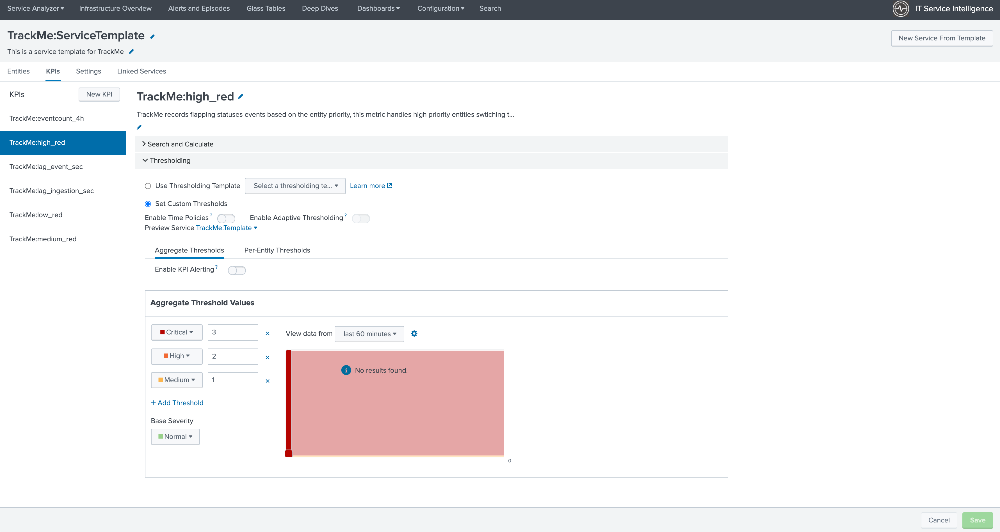{kind=link}
Make sure to apply the same thresholds per entity, and reflect the same change on medium_red and low_red metrics. (with potentially different values if necessary)
When business and technical services are created, you potentially can fine tune the other metrics up to the requirements, note that TrackMe settings for that or these entities composing the service are reflected in anyway using the flapping statuses metrics.
Final: Create services business and technical services using TrackMe KPIs¶
Finally, the ITSI integration is ready and you can create new services using the template service or manually cloning the pseudo service we created earlier.
Once you created and activated a new service, ITSI will start to report TrackMe KPIs after a short moment: (metrics are generated every 5 minutes)
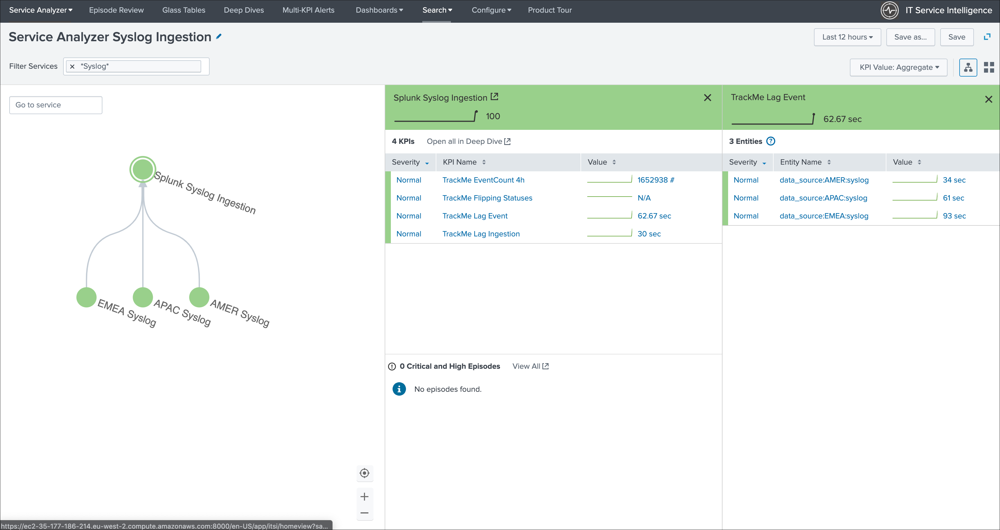 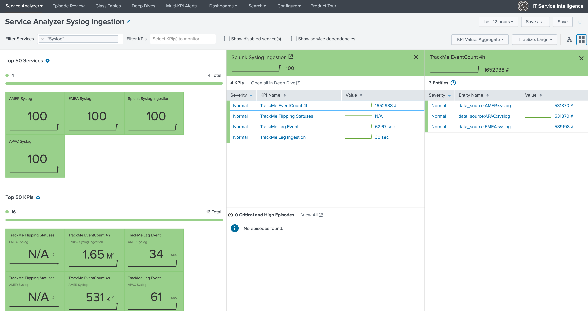 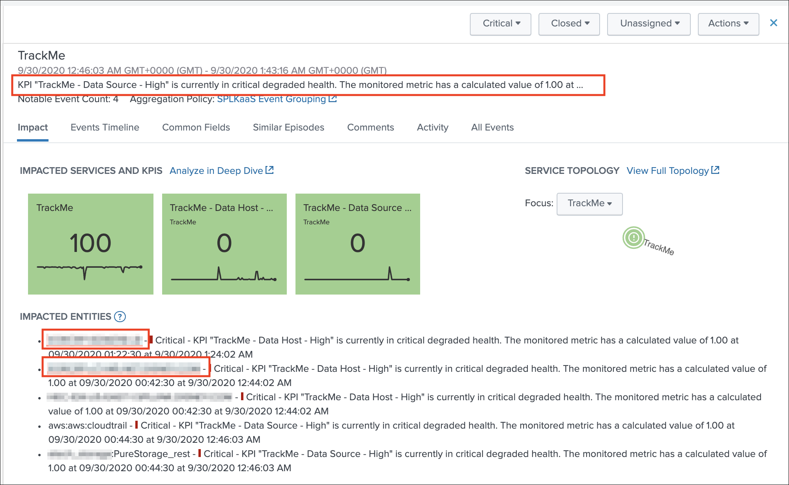 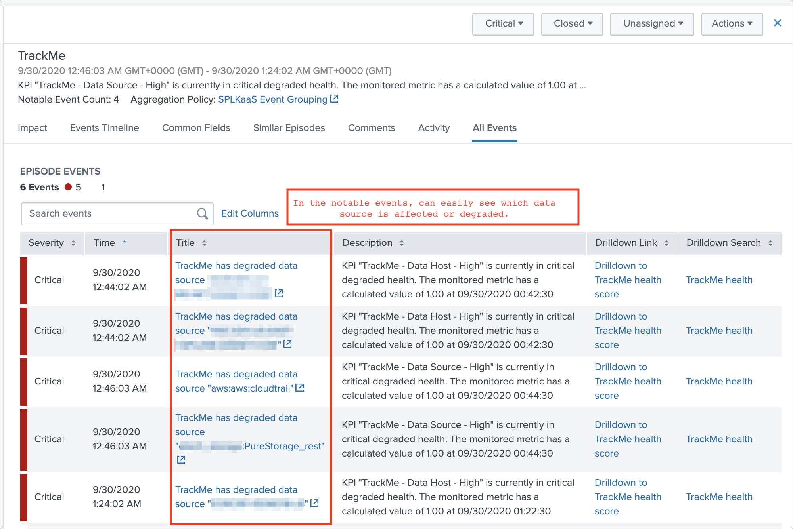 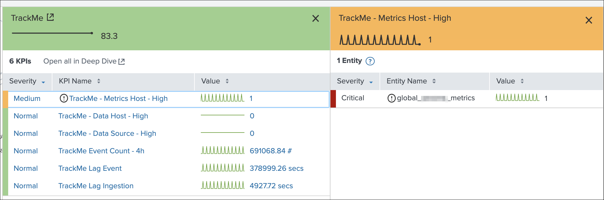 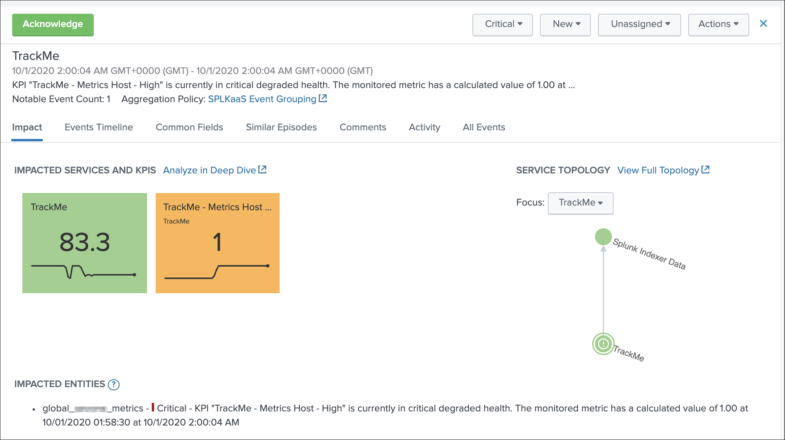 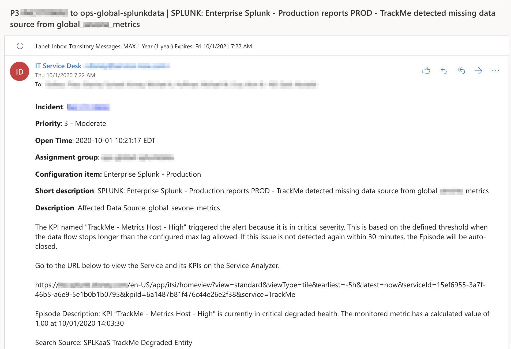{kind=link}
{kind=link}
{kind=link}
{kind=link}
{kind=link}
{kind=link}
{kind=link}
TrackMe acts now transparently as a companion of ITSI, you will continue to manage data sources in TrackMe, create Elastic sources, manage states and max lagging values which are reflected naturally in ITSI.